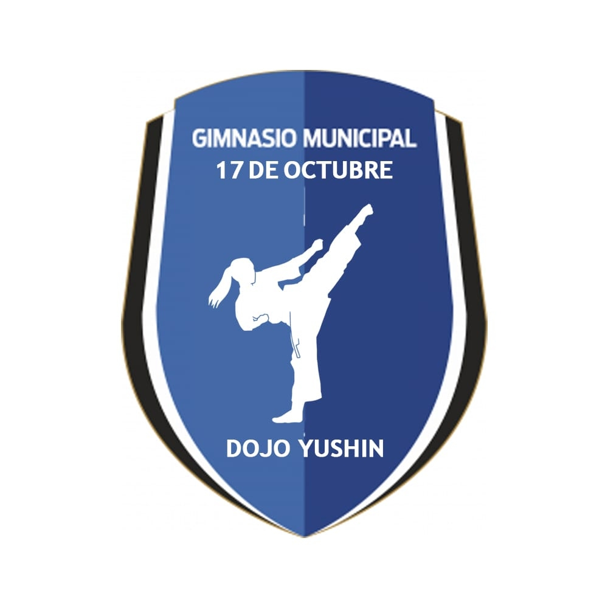
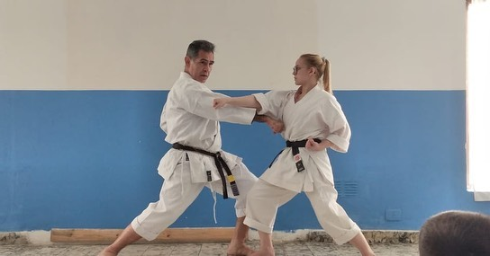
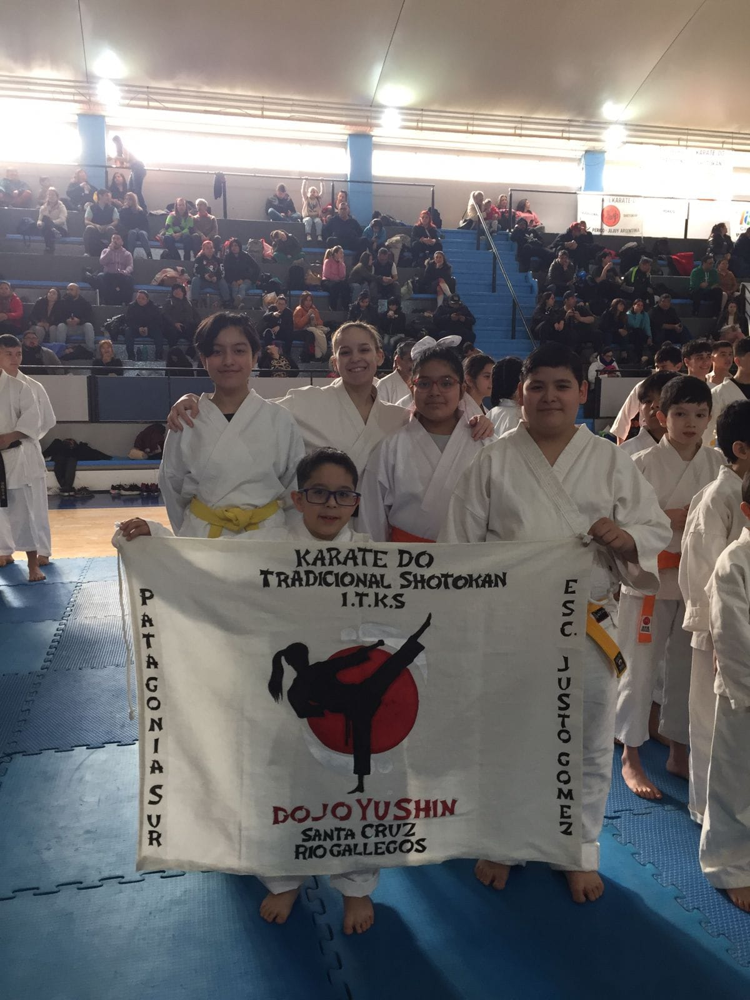
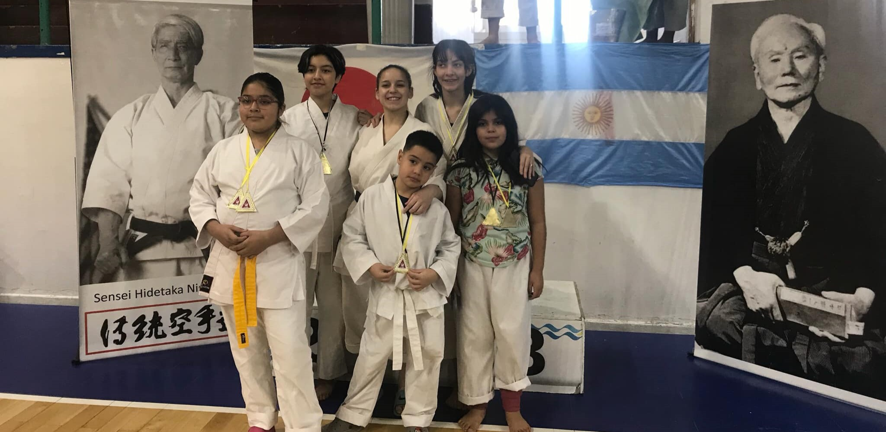

<DOCTYPE html>
<html lang="en">
<head>
    <meta charset="UTF-8">
    <meta https-equiv= "X-UA-Complatoble" content="IE=edge" >
    <meta name="viewport" content="width=device-width, initial scale=1.0"> 
    <title> PROYECTO_FINAL </title>
    <link rel="stylesheet" href="public/css/style.css">
    <link rel="stylesheet" href="public/imag/outline_sports_martial_arts_black_24dp.png">
    <body>
     <!--NAVBAR-->
    <nav class=" navbar">
        <a href="">INICIO</a>
        <a href="public/views/dias.html">DIAS y HORARIOS</a>
        <a href="">SOBRE NOSOTROS</a>
        <a href="">NOVEDADES</a>
    </nav>
    <!--HEADER-->
    <header>
        <div>  
        <h1>VLOG DEL DOJO YUSHIN </h1>
        </header> 
             </div>
    <!--PRINCIPAL-->
        <div class="PRINCIPAL"> 
            <aside> 
                <h2 class="assidetittle">DOJO YUSHIN, Gimnasio Municipal ``17 DE OCTUBRE´´</h2>
                <a> </a>
                <h3 class="assidetittle">Director Tecnico Nacional y Profesora a cargo</h3>
                
                <h4 class="assidetittle">CAMPEONES NACIONALES</h4>
                
            </aside>
            <main>
                <h1>KARATE RIO GALLEGOS - ESCUELA JUSTO GOMEZ</h1>
                <p><i>Escuela de karate do tradicional, estilo shotokan. </i></p>
            <a href="public/videos/KARATE ‐ Hecho con Clipchamp.mp4"></a><video src="public/videos/KARATE ‐ Hecho con Clipchamp.mp4" controls autoplay muted></video>
            <p> Torneo Provincial</p>
            
        </main>
<!-- FOOTER --> 
        <footer> 
            <p> &radic; Ojeda Rebull Lusmila - lusmila123@icloud.com - Potrero Digital 2.023
            <a href="ttps://www.facebook.com/profile.php?id=100083853675438">FACEBOOK</a>
            </p>
        </footer>
    </body>
</html>